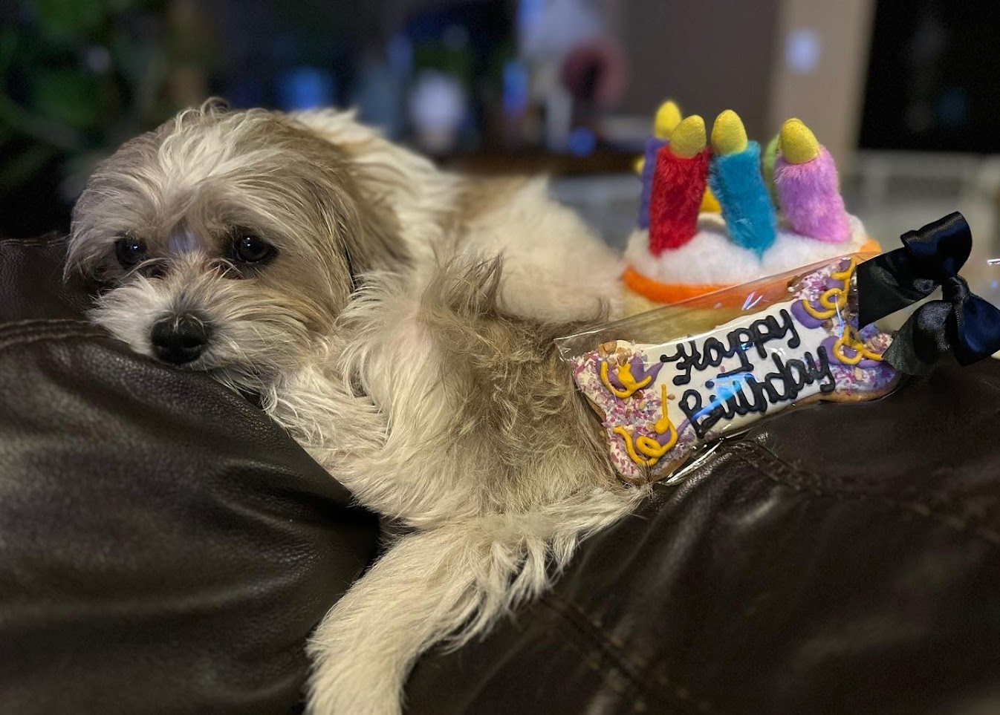
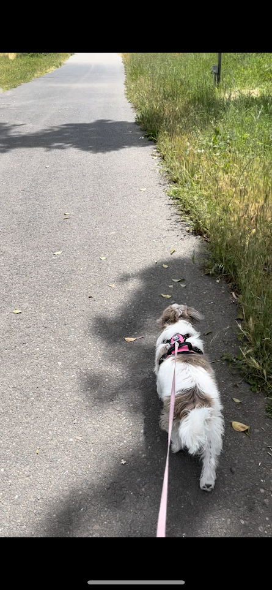
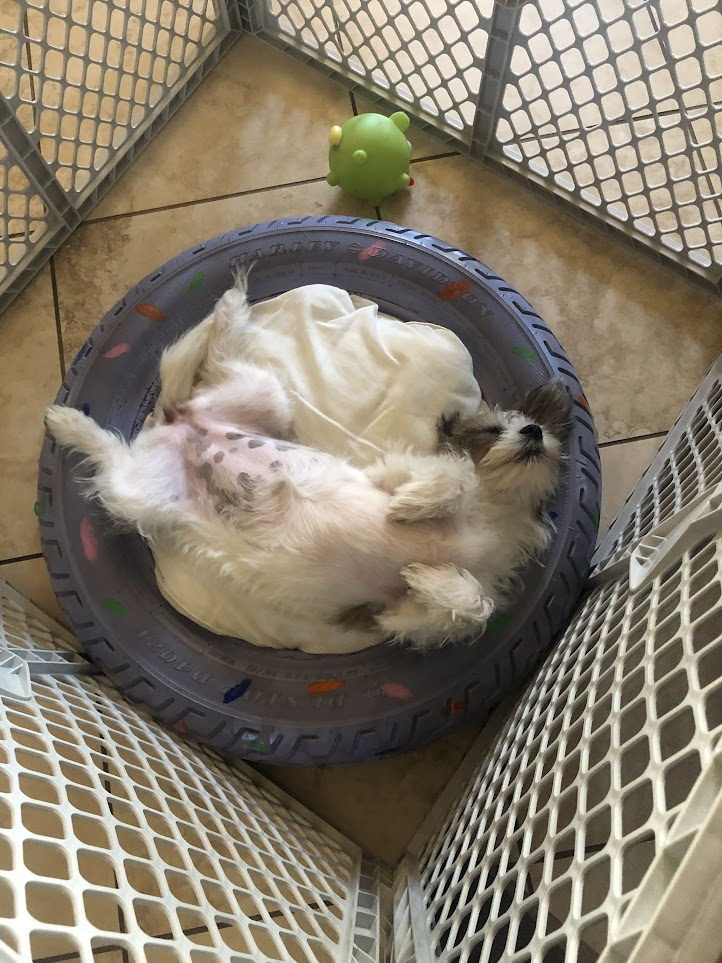
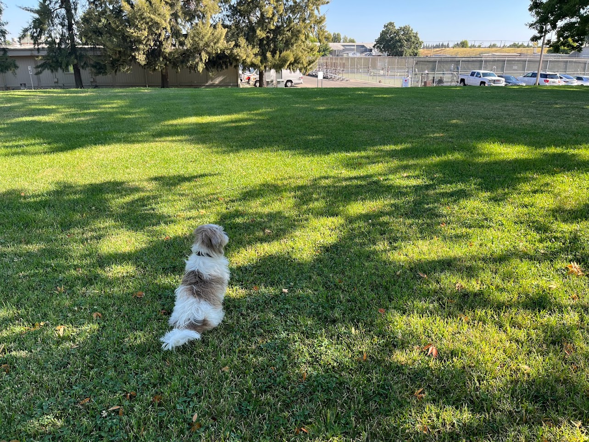

To many people, owning a dog may seem like a daunting task. However, with a little bit of guidance and advice, having a furry friend can be the best decision you ever made!

According to the American Kennel Club, owning a dog can have a variety of benefits. This includes:
•Companionship: Feeling lonely? Look no further, dogs will provide you with unconditional love, attention, and emotional support!
•Health: Dogs love to move around and be active. Having a dog encourages you to stay active with lots of playtime and walks.
•Builds Responsibility: Having a dog will ensure that you are accountable for it. You will have to take care of it and raise it, building fundatmental life skills.
Just like us humans, dogs want to feel loved and be given affection. Make sure to spend quality time everyday with your dog. This means daily walks, yummy treats, grooming, and more.
Having the right tools can make your life a lot easier when caring for your dog. Be sure to buy a quality crate, a proper leash and collar, and plenty of sanitary items. You don't want a mess like this to end up on your floor!
Train your dog as early as possible. The sooner your dog is trained, the more consistently it will listen to you. It is up to you whether you want to try and train the dog yourself, or to hire a professional trainer for guidance. There are plenty of private trainers that are available to hire online, as well as local pet stores such as PetCo and PetSmart.
